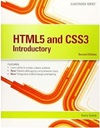
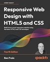

WEB DEVELOPMENT FUNDAMENTALS

DESCRIPTION
This module will introduce the learner to the fundamentals involved in the development of web pages.
LEARNING OUTCOMES:
On completion of this module the learner will/should be able to:
- Describe the structure and operation of the World Wide Web.
- Develop HTML web pages that conform to W3C standards.
- Format and style web pages.
- Demonstrate an understanding of the principles of design in relation to the web development process.
INDICATIVE SYLLABUS:
Fundamental Web Concepts
- Structure, Standards, W3C
- Browsers, Service Providers
- Protocols, URL's, files, validation
- Client/Server architecture
HTML5
- Basic syntax, images, hyperlinks, lists, block and inline elements, tables and forms
- Association, form submission, name/value pairs
- Semantic structural elements
CSS
- Benefits of CSS, syntax, selector types
- CSS text styling & layout
- How styles interact: Inheritance, specificity, location
- The Box Model: Background, borders, margins, padding, box dimensions
Web Design Concepts and Principles
Role of Scripting
Languages & interactivity
FULL TIME MODE WORKLOAD(PER WEEK):
- Lab Lectures: 2 hours
- Practicals: 2 hours
TEACHING AND LEARNING STRATEGIES
This module aims to use active learning by combining theoretical aspects of web development with practical implementation giving the student a strong overall understanding of the subject.
RECOMMENDED ASSESSMENT TECHNIQUES:
- Weekly Practicals 20%
- Project 30%
- Final Practical Exam 50%
Typical Project Assignments:
- Develop an interactive website using HTML and CSS
- Use HTML5 to validate forms
- Apply best design practice to develop a responsive website
MODULE URLs:
Recommended Texts
| Cover | Book |
|---|---|
| Connolly, R., (2014) Fundamentals of Web Development. Pearson.ISBN 0133407152 ISBN-13 9780133407150 | |
|  | Boehm, A., (2015)Murach's HTML5 and CSS3, 3rd Edition. Mike Murach & Associates. ISBN 1890774839 ISBN-13 9781890774837 |
|  | Frain, B., (2015) Responsive Web Design with HTML5 and CSS3 - Second Edition. Packt Publishing -ebooks Account.ISBN 1784398934 ISBN-13 9781784398934 |